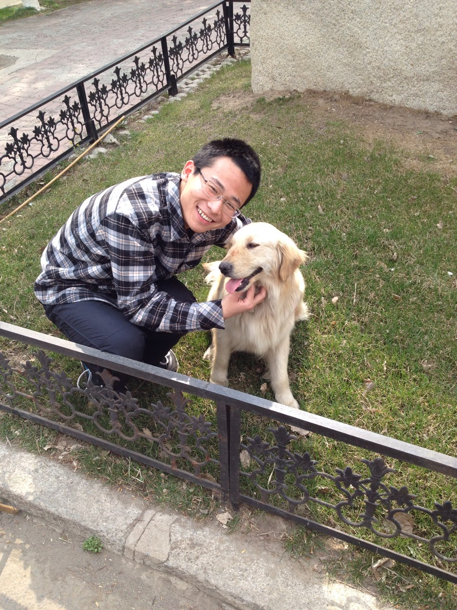

Xin-Peng Chen (陈新鹏)
|  |
Xin-Peng Chen,
|


Research Interests
My research interests include deep learning and computer vision.Currently, I mainly focus on image/video captioning.
Before that, I have explored on the task of text detection in natural images.
Work Experience
From Nov. 2016 to Feb. 2017, I was an intern in Central Research Laboratory of Hitachi in Tokyo.From Mar. 2017 to the present, I am an intern in AI Lab of Tencent